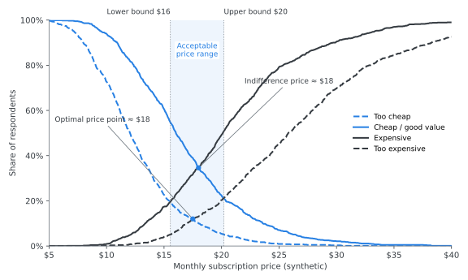
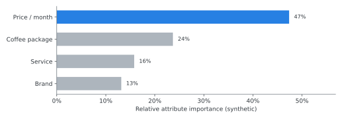
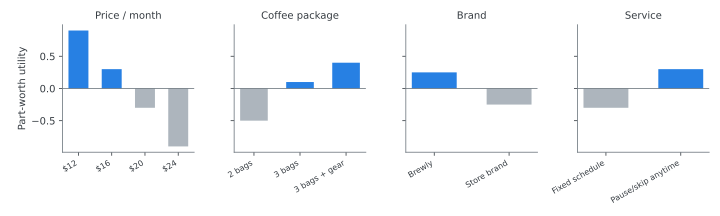

Ipsos: Pricing & Brand Research Methods
Experience at a glance
Senior Research Executive · Ipsos Taiwan · Sep 2019 – Sep 2021
- Designed pricing and brand research studies using Van Westendorp price sensitivity analysis, conjoint analysis, regression, and experimentation to guide pricing, positioning, and investment decisions for enterprise clients
- Combined survey, social-listening, and quantitative analysis. For a global food & beverage account, the insights helped drive 120% YoY growth in the client’s investment
- Supervised a team of three to design research and turn the results into recommendations that client stakeholders adopted
Method demo: pricing a new subscription
Illustrative demonstration using synthetic data. No client data is shown.
To show how I approach this kind of problem without reproducing any client work, this demo follows one fictional product: Brewly, a monthly coffee-bean subscription preparing to launch.
1. The research question
How should Brewly set an acceptable price range, understand the trade-offs customers will make, and check that its positioning works?
No single method answers all three parts, so each method is matched to one part:
Van Westendorp price sensitivity
What price range will customers accept?
Conjoint analysis
What will customers trade off: features, brand, service, or price?
Regression
What drives purchase intent and brand perception?
Experiments
Which message or concept performs better?
2. Van Westendorp: finding the acceptable price range
Respondents answer four questions. At what price would the product be too cheap to trust, cheap / a good deal, getting expensive, and too expensive to consider? Plotting the four cumulative curves shows where price resistance begins.

Illustrative demonstration using synthetic data. No client data is shown.
How to read it
- Acceptable range (shaded): between the lower bound, where “too cheap” meets “expensive”, and the upper bound, where “cheap” meets “too expensive”. Pricing outside this band risks either a quality signal problem or outright rejection.
- Candidate reference price: the optimal and indifference price points sit close together near the middle of the band. That gives a defensible anchor for the launch price.
- Limitation: Van Westendorp tells you what customers find acceptable, not what they will choose against alternatives. That is why the next step matters.
3. Conjoint: understanding the trade-offs
A choice-based conjoint shows customers realistic packages side by side. Their choices reveal how much each feature is worth relative to price.


Illustrative demonstration using synthetic data. No client data is shown.
From preferences to package design
Customer preferences part-worths by attribute
Trade-offs e.g., flexible pause/skip offsets part of a price step
Package design Basic / Core / Premium
Pricing & positioning lead with the Core package
In this synthetic example, a simulated market with three packages gives the mid-priced Core package (3 bags, flexible schedule) about half of the preference share. Most of its advantage comes from service flexibility rather than a lower price, which supports a positioning built on convenience, not discount.
4. Regression & experimentation
The two methods above set price and package. These two check why customers respond and what message to launch with.
Regression: drivers
Model purchase intent or brand perception on attribute ratings, such as taste, convenience, and value for money. The goal is to find which perceptions actually move the outcome, so the brand invests in the right claims.
Experiments: concept & message tests
Randomly show matched groups different concepts, ads, or positioning statements. Compare purchase intent and choice, then roll out the winner with measurable confidence.
5. The decision framework
Customer research
Price sensitivity + Feature trade-offs + Brand / positioning response Van Westendorp · conjoint · regression · experiments
Commercial recommendation price range, package line-up, launch message
The point of the research is not any single chart. It is one recommendation that pricing, product, and marketing teams can all act on.
Brewly is fictional and every value on this page is synthetic. The demo shows methodology only and does not represent any Ipsos client engagement.